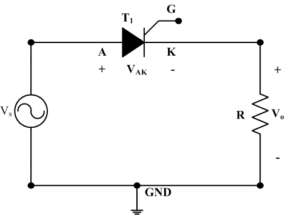

AIM:
To study the Half Wave Controlled Rectifier with a Resistive Load.
OBJECTIVES:
At the end of the module the student would be able to-
1.Phase Controlled Rectification
2.Single Phase Half Wave Controlled
THEORY:
The circuit diagram of single phase half wave controlled rectifier with resistive R load is shown in Fig. 1. This is the simplest form of controlled rectifier which consists of a single thyristor feeding DC power to a resistive load.

Fig. 1. Half wave controlled rectifier with resistive R load
For the supply voltage of , the SCR can conduct only when anode voltage is positive and a gate signal is applied. Therefore, the rectification process of half wave controlled rectifier can be explained as:
1. During the positive half-cycle of the supply voltage, the SCR is forward-biased and will conduct if a trigger is applied to the gate. Let, SCR is triggered at some firing angle α, the load current flows and the output voltage Vo will be the same as the input voltage
2. At time t = π, the current falls natural to zero, since the SCR is reverse-biased. Therefore, During the negative half-cycle, the SCR blocks the flow of current, and no voltage is applied to the load.
3. The SCR stays off until the gate signal is applied again at (α + 2π).
The period from 0 to α in Fig. 2 represents the time in the positive half-cycle when the SCR is off. This angle (measured in degrees) is called the firing angle (α). The SCR conducts from α to π; this angle is called the conduction angle (θ).